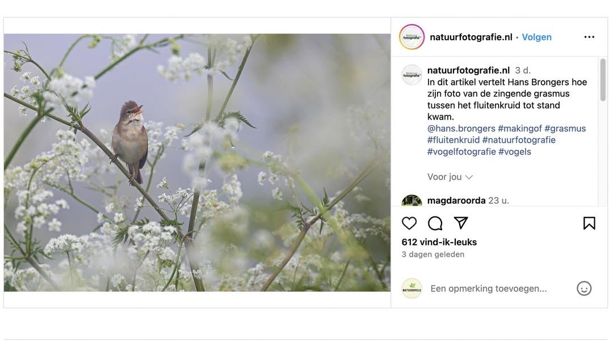

Bosrietzanger, geen grasmus
11 juni 2024 · Natuurfotografie.nl
- Op de foto
- Bosrietzanger
- Het ging over
- Grasmus

Volgens @natuurfotografie.nl staat er een Grasmus op de foto. Als ze nou door hun verrekijker hadden gekeken in plaats van door de camera hadden ze waarschijnlijk in het veld al gezien dat dit natuurlijk om een Bosrietzanger gaat 😉